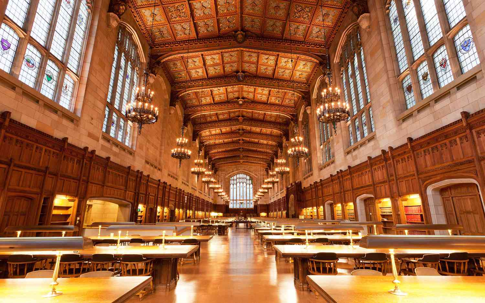
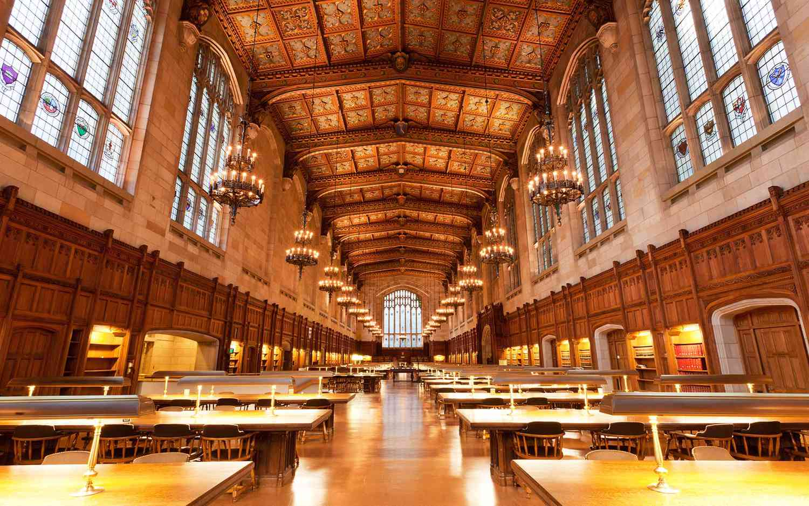

University of Michigan
The University of Michigan (U-M), founded in 1817 and located in Ann Arbor, is one of the top public research universities globally. It offers over 275 programs across 19 schools, including top-ranked programs in business, law, engineering, and medicine. Known for research excellence, U-M attracts a diverse student body of over 50,000.
- Prestigious Academic Reputation: The University of Michigan is consistently ranked among the top public universities in the U.S. It offers a wide range of highly regarded programs across multiple disciplines, including engineering, business, law, medicine, and the arts.
- Research Powerhouse: As one of the top research universities globally, Michigan is known for cutting-edge research and innovation. It invests heavily in research funding and boasts facilities and partnerships that support breakthroughs in technology, health, and the social sciences.
- Vibrant Campus Life: Located in Ann Arbor, Michigan, the university has a lively campus atmosphere, offering diverse extracurricular activities, student organizations, and athletics. Its football team, the Michigan Wolverines, has a huge following and is a significant part of the school's identity.
Acknowledgement
I would like to express my sincere gratitude to the University of Michigan for its commitment to excellence in education, research, and innovation. U-M's rich history, world-class faculty, and dynamic campus culture have consistently fostered academic growth and personal development, contributing to its reputation as a global leader in higher education. Its dedication to diversity, equity, and inclusion further enhances the learning environment, making a lasting impact on students, alumni, and society.

 
